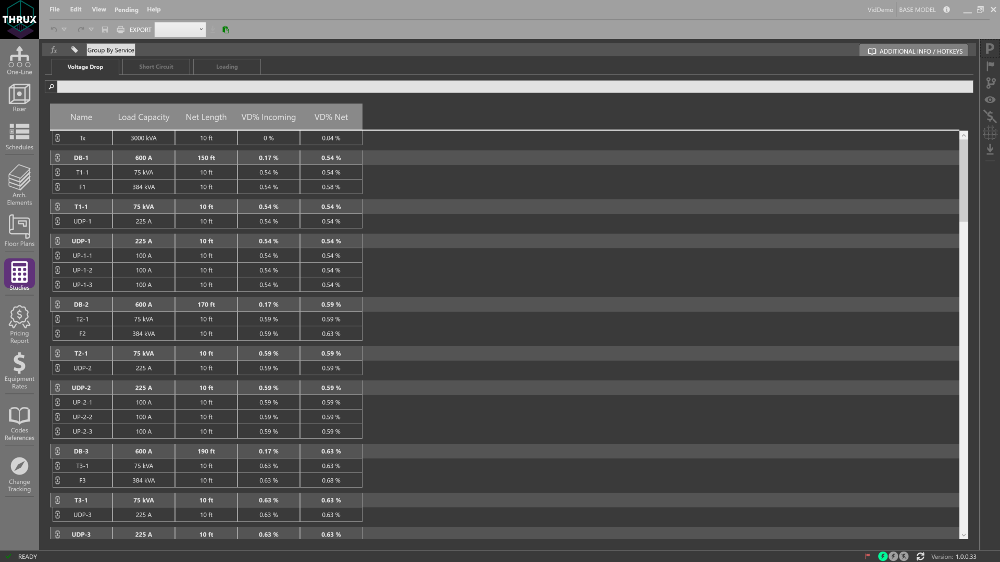
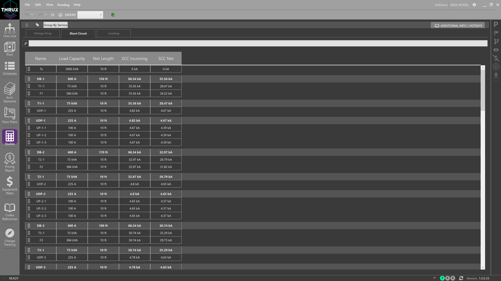
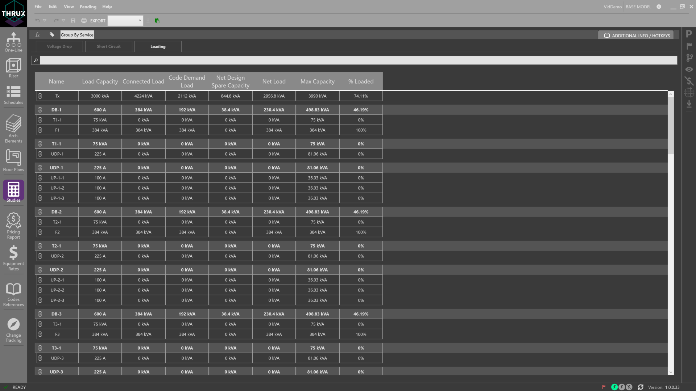
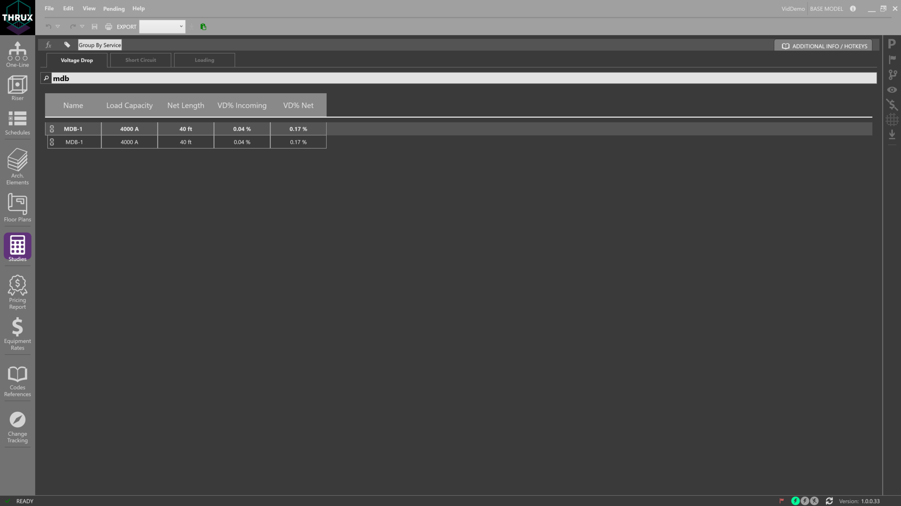
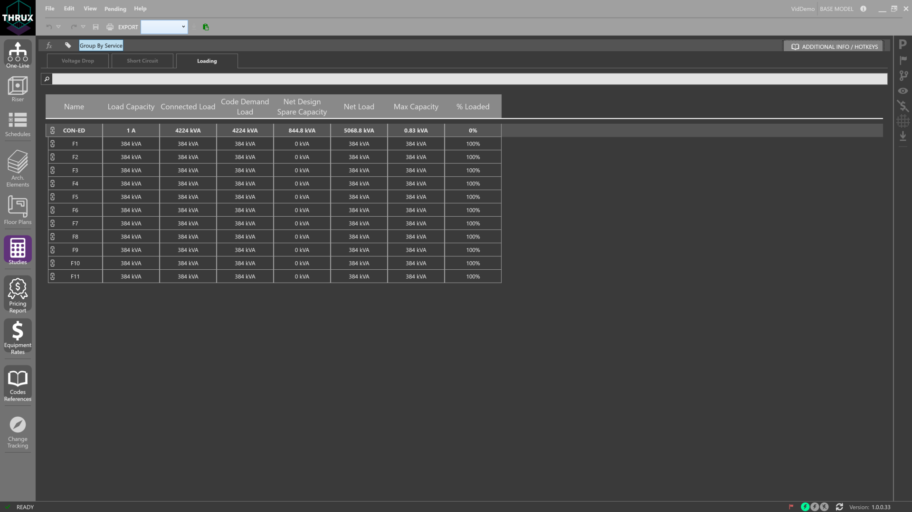

Studies¶
Use Studies to view Voltage Drop, Short Circuit, and Loading reports.
Voltage Drop¶
The Voltage Drop study presents the VD% Net at all points of distribution equipment with all downstream branch networks.
Short Circuit¶
The Short Circuit study presents the SCC Net at all points of distribution equipment with all downstream branch networks.
Loading¶
The Loading study presents the Load Capacity, Connected Load, Code Demand Load, Net Design Spare Capacity, Net Load, Max Capacity, and % Loaded values at all points of distribution equipment with all downstream branch networks.
Searching¶
Search for specifc pieces of equipment by name.

Group By Service¶
Sort the studies by grouping each load by the Service (Utility) it is fed from.
